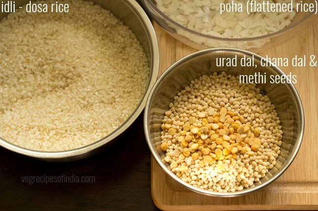

Masala dosa is a well-known South Indian dish that is now enjoyed across India and around the world.
Dosa is a crisp yet soft crepe made from a fermented batter of rice and lentils. They are naturally gluten-free and dairy-free. When served with a spiced potato filling inside or on the side, it is known as masala dosa.

1. First take all the ingredients in three bowls. Note that these ingredients are easily available online or any Indian or Asian grocery store if you live outside India.
1.5 cups idli rice or parboiled rice in one bowl. You can also use regular short-grained to medium-grained rice like sona masuri or parmal.
½ cup urad dal (husked black gram) + 1 tablespoon chana dal (husked and split bengal gram) + 20 methi seeds (fenugreek seeds) in a second bowl
⅓ cup thick poha (flattened rice) in a third bowl.

2. Rinse the lentils and fenugreek seeds a couple of times. Then soak them
in 1 cup water for 4 to 5 hours.
Tip: Ensure to use urad dal that are fresh and within their shelf-period.
3. Rinse the rice a couple of times and keep aside.
4. Rinse flattened rice once or twice and then add to the rice.
5. Pour 2 cups water. Stir and soak both rice and flattened rice together for 4 to 5 hours.
6. Before grinding, strain the water from the soaked lentils+fenugreek seeds and keep it for grinding urad dal. You can also use fresh water if you prefer.
7. Add the lentils in the grinder jar. Also add ½ cup of the soaked and strained water to the lentils or ½ cup of fresh water if you like.
8. Grind the urad dal, chana dal and fenugreek seeds till you get a batter which is light and fluffy. The urad dal has to be ground really well, so that the dosa batter ferments well.
9. Remove batter in a bowl or pan with a spatula. Below is a photo showing
the consistency of the urad dal batter.
Note that a well ground and fluffy urad dal batter helps in the
fermentation process.
10. Strain the rice well. Then in the same grinder, add the soaked rice and 1 cup fresh water. You can grind rice in one batch or in two to three batches. This will depend on the size of the grinder jar.
I ground in one batch and added 1 cup water for grinding. You can even add ¾ cup water while grinding. Addition of water will depend on the quality of rice. So you may need to add less or more water.
11. Grind the rice till you get a fine grainy consistency in it. The rice batter should have a fine rava (cream of wheat) like consistency of the ground rice grains.
12. Now pour the rice+flattened rice batter in the same pan or bowl containing the urad lentil batter.
13. Add ½ teaspoon edible rock salt or add as per taste. You can also use sea salt or pink salt.
14. Mix the salt very well with the ground batter. Also, mix both the rice batter and the urad lentil batter thoroughly. Cover with a lid and keep aside to ferment for 8 to 9 hours at room temperature.
1. First rinse and then boil 4 medium sized potatoes in 2 cups water for 5 to 6 whistles in a pressure cooker.
2. When the potatoes are cooking, rinse and soak 1 tablespoon chana dal in ¼ cup hot water for 30 minutes. Then drain all the water from the chana dal and set aside. If you are out of chana dal, then simply skip it.
3. When the pressure settles down on its own in the cooker, remove the lid. Drain the potatoes and let them become warm.
4. Then peel and chop them. Also, thinly slice 2 medium to large onions
(200 grams) and chop 1 to 2 green chilies, finely chop 1 inch ginger and
some coriander leaves. When you measure, you should have:
1.25 cups thinly sliced onions
1 teaspoon chopped green chillies
1 teaspoon finely chopped ginger
3 tablespoons chopped coriander leaves
5. Heat oil or ghee in a frying pan or skillet. If using cashews, then fry 2 tablespoons cashews at this step and keep them aside. Lower the heat and add mustard seeds and let them splutter. You can add ½ teaspoon cumin seeds while tempering.
6. Then add the chana dal.
7. Saute the chana dal for 2 to 3 minutes on a low heat or till they turn light golden or golden.
8. Now add the sliced onions, curry leaves, green chilies and ginger.Mix very well.
9. Next add the boiled chopped potatoes.